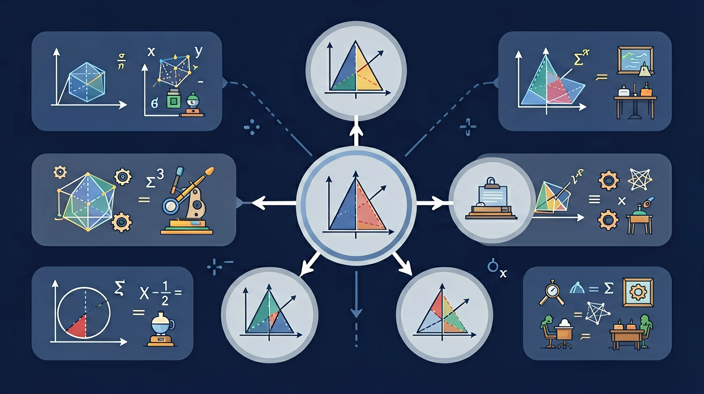

🎯 能说出简单随机抽样的操作步骤
🎯 能判断样本量对估计精度的影响
🎯 能计算样本均值与总体均值的误差范围
❓ 为什么抽几个苹果就能知道整箱好不好吃？
❓ 样本越大就越准吗？
❓ 估计值和实际值差多少算正常？
学完这一课，这些问题你都能自信地回答。
检测5000个灯泡寿命，最合理的抽样量是？
下列哪种属于随机抽样？
用样本估计总体是统计的基本思想。样本中某类个体所占比例可用来估计总体中该类个体的比例，进而估算总体数量。估计结果是近似值，样本容量越大、抽样越随机，估计通常越可靠。
先求样本中的比例，再乘以总体数量。作答要写“约为”，体现估计的近似性质。
常见误区：常见误区是把估计值说成精确值，或抽样不随机却直接推广到总体。
用样本估计总体时，结论的可靠性主要取决于？
抽检 200 件产品发现 40 件次品，估计 10000 件中次品约有？
And：学生已学过普查概念
But：现实中无法对所有个体调查时怎么办？
Therefore：理解抽样调查的必要性
抽样是从总体中选取部分个体进行调查的方法。比如要统计全校1000名学生的平均身高，逐个测量太耗时，可以随机抽50人测量，用这50人的平均身高估算全校数据。关键点：1. 样本要有代表性 2. 样本量不能太小（如至少30个）
🌍 超市检查苹果质量时，不会切开所有苹果，而是从每箱随机挑几个检查，这就是抽样。
以下哪种情况必须用抽样调查？
And：知道抽样基本概念
But：随便抽和科学抽有什么区别？
Therefore：掌握简单随机抽样方法
科学抽样要保证每个个体被抽中的机会均等。例如从300名学生中抽30人：1. 给每人编号001-300 2. 用随机数表或抽签决定。错误做法：只抽前排同学（位置偏见）或只抽熟人（主观偏见）。样本就像汤的试味——必须搅匀再舀一勺。
🌍 就像摇匀彩票箱再摸奖，医院血检也是从血管混合后取少量化验。
下列哪种是简单随机抽样？
And：会抽取样本
But：如何用样本数据推测总体？
Therefore：学习用样本均值估计总体
样本均值是总体均值的无偏估计。例如抽查50袋大米平均重500g，可以推测1000袋大米总重约500×1000=500kg。注意：1. 估计会有误差 2. 样本量越大误差越小。就像尝3颗葡萄甜就说整串甜可能有误，尝10颗就更可靠。
🌍 买瓜子时抓一把数坏籽比例，就是在用样本估计整袋质量。
抽查80棵树平均高4.2米，估算2000棵树总高约为？
And：能进行简单估计
But：为什么不同抽样结果不一样？
Therefore：理解抽样误差的概念
抽样误差是样本统计量与总体参数的差异。比如真实全校平均身高165cm，第一次抽样得163cm，第二次得166cm，这些3cm内的波动就是正常误差。影响因素：1. 样本量（样本越大误差越小）2. 总体变异程度（数据越分散误差越大）。就像用渔网捞鱼，网眼大小（样本量）决定漏网多少（误差）。
🌍 天气预报用部分观测点数据推测全市温度，实际温度可能有1-2℃误差。
以下哪项不能减小抽样误差？
开放任务：用三步写出你如何向同学讲清「抽样与估计」。
抽样如同尝汤勺判断整锅咸淡
用部分代表整体时需保证每个个体被抽中的机会均等
分层抽样比简单随机抽样在群体差异大时更精确
超市质检员从不同区域各取5个苹果检测
用班级10%同学的睡眠时间推算全校情况
在统计调查中，样本的选择应该遵循什么原则？
设计一个调查方案，估计超市所有苹果的平均重量和合格率。
💡 用样本频率推断总体。
外链：https://phet.colorado.edu/sims/html/plinko-probability/latest/plinko-probability_zh_CN.html
先独立作答，再点选项查看对错与错因。
在超市苹果质量调查中，调查员随机抽取了50箱苹果进行检查。这种抽样方法属于什么类型？
如果调查员想要估计超市所有苹果的平均重量，应该使用哪个统计量？
在调查中，调查员发现样本中有85%的苹果是合格的。如果想要估计总体中合格苹果的比例，应该使用哪个统计量？
在超市苹果质量调查中，调查员随机抽取了50箱苹果进行检查。如果每箱有20个苹果，那么样本中共有____个苹果。
答案：1000
样本中的苹果总数=抽取的箱数×每箱的苹果数=50×20=1000。
如果调查员发现样本中有85%的苹果是合格的，那么估计总体中合格苹果的比例为____%。
答案：85
样本比例可以直接用于估计总体比例。
✅ 误差与√n成反比，当n足够大后精度提升有限
💡 混淆了样本量与误差率的非线性关系
✅ 必须使用抽签法或随机数表法
💡 忽视抽样方法的科学性
口诀：抽样要随机，估计才靠谱
类比：像试吃蛋糕的一角来判断整个蛋糕的味道
（中考真题）要估计池塘鱼数，先捕100条做标记后放回，第二次捕80条中有5条带标记，估算鱼总数约为？
超市用10箱苹果（每箱20个）的检测结果推算500箱质量，这属于？
（迁移题）若想将抽样误差缩小为原来的1/3，样本量应？
点击节点跳转到对应章节；可切换布局。